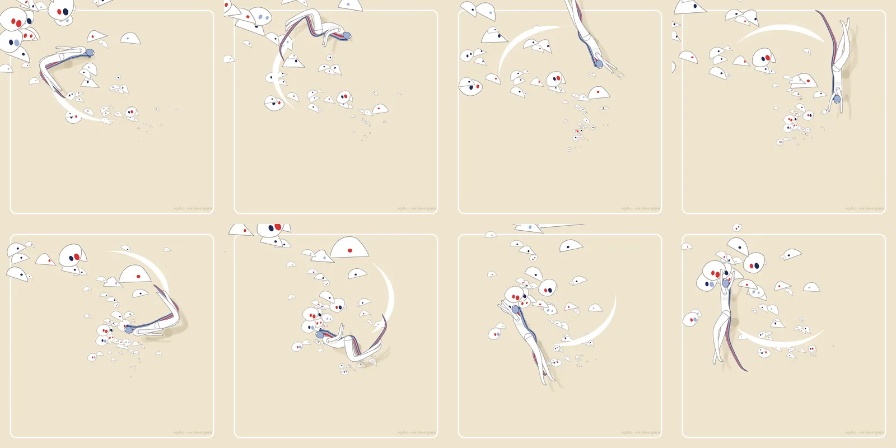

帖子只有两个英文词，《Unseen dance》（「看不见的舞」），加一段 10 秒、1080×1080 的循环视频。作者的简介是 “Dreams in loops”。就我能看到的公开封面静帧而言：奶油色的底，一道圆角白线框；画面左上角挤着一群白色的眼形碎片，有的大得像一张脸，有的小得只剩一粒瞳孔；一位蓝发舞者在中央后仰翻腾，身后拖着蓝、红、藏青三色的飘带，脚下划过一弯白色的新月。本页做两件事：一是把这件作品和它的语境记下来，二是不借用它的任何像素，自己用 canvas 写一个可以在线看的复刻，并把推断的部分逐条标出来。
版权说明：《Unseen dance》是 Raphaël Erba 的作品，帖子与视频未见任何开放许可，因此本页只写导读，只引用帖文标题与评论里的短句，不转载视频、不转载封面帧、不下载视频。封面静帧只在本地用于对照，没有上站。「复刻」一节里的所有图形、曲线和时序都是本站自己画、自己写的，页面上也写明 “replica · not the original”。作者在 2026 年 8 月的公开帖里说过，有人拿他的作品去训练 AI、做教程却没有署名，他很不满（8 月 12 日）；另一条（8 月 26 日）提到别人在用他的作品做 AI 视频，所以他决定自己也试一试。两条我只读到帖文开头，⚠️ 未读完整线程。所以这个复刻只当学习笔记，署名写在最前面；作者如有意见，请使用页首与页尾的移除请求。
原帖
帖文全文只有一句：“Unseen dance”（原帖）。附一段 10 秒的方形视频。截至 2026-11-14 18:20 新加坡时间，X 显示约 306 个喜欢、35 次转发、12 条回复、49 个书签、约 6,900 次观看，另有 1 条引用 ⚠️ 数字会变。
- 作者没有写制作说明。帖子本身没有出现工具、代码或演示链接。有人在回复里问 “Which software is used”（@williamhardys），我检查时线程里没有作者的回答 ⚠️。作者在 2026-10-18 的另一件作品《The Path》里说过用的是 C4D 加本地 AI 辅助，但那是另一件作品，不能挪到这一件上 ⚠️。
- 观众怎么读它。有人说 “big brother is watching you”（@builtbysasha），有人说漂浮的眼睛 “wonderfully weird”（@tskhovreli）。这两句是我读画面时的参照，不代表作者的解释。
- 同一个系列。作者 2026-11-10 发的《Voronoi Dance》（8 秒）用了同一套色：奶油底、藏青、淡紫蓝、红，加上一圈白线框和铅笔排线。《Unseen dance》里那些眼形碎片的形状很像 Voronoi 细胞，这是我的观察，不是作者的说法 ⚠️。
- 另有一位用户引用转发，称他是“这里为数不多还在做 A+ 作品的艺术家”（@Dorizzdt）。
我从静帧里读到的东西
只有一帧封面，所以下面都是“读画面”，不是“作者说”。
- 色。底色约为 #EFE4CE；白色是纯白；描边是偏冷的灰（约 #5D5B62）；点缀是藏青（约 #1C2A58）、红（约 #DF2F2F）、淡紫蓝（约 #9DB0D4）。克制到只有这四种颜色。
- 框。一圈白色圆角线框，约 6/1024 粗，圆角约 26，离画布边约 48。框在左上角被眼睛“咬”出缺口，眼睛压在框上。
- 眼。白色的、带细灰描边的眼形碎片。大的像鼓起来的圆胞，里面有两粒大的椭圆瞳孔（红、藏青、淡紫蓝）；中等的像平底的“上眼睑”或圆顶；小的只剩一个角落里的瞳孔。小眼睛脚下有淡淡的圆圈。从大到小大致沿着一条从左上到右下的对角线排开，像是从右下方的某个点涌向左上，越近越大。这是我的推断 ⚠️。
- 舞者。一个后仰成 C 形的细线人物，白色身体、灰描边、淡淡的排线；头发和一条飘带是淡紫蓝，中间一道红，边上压着藏青；头顶一小块白色是脸的侧面；身后有一团沙色的软影。
- 新月。一弯白色的厚新月从舞者脚边划到右下，两头尖，中段最厚。我读成舞者运动留下的一道“弧线”。
复刻
打开复刻 demo →（单页 HTML + canvas，约 17 KB，无任何外部依赖；单击暂停，键盘 ←/→ 逐帧；URL 加 ?t=秒 可定到某一刻，加 ?pause 默认暂停，加 ?embed 去掉说明文字）。独立复刻，非原作：没有使用作者的像素、视频或代码（他也没有公开代码）；舞者与眼睛都是我自己用样条和贝塞尔曲线画的。

做法
- 眼群＝透视里的涌流。每只眼有一个方向角 α 和一个相位 ℓ；它离右下消失点 (845, 845) 的距离按指数 r = 270·(1200/270)ℓ 增长，ℓ 随时间匀速推进，尺寸 ∝ r。一只眼出生时从 0 长出，越近越大，冲出左上角后以同一周期重生。因为恰好一个周期是 10 秒，所以循环无缝。为了让第 0 帧像封面，我把封面里最显眼的 13 只近景眼的位置反解成 (α, ℓ)，手摆回去；其余由固定种子的伪随机生成。
- 眼形。三种：平底圆顶的“上眼睑”、一侧直边的楔形、近景的胖圆胞。瞳孔是被裁在眼形里的椭圆，并且会朝舞者的方向微微转过去（我读成“看着她”）。每只眼每 10 秒眨一次；与舞者重叠时，会被一股连续的软斥力推开，不会突然跳走。
- 舞者＝骨架 + 渐细样条管。13 个关节角做五个关键姿势（后仰、直身、蜷身、劈叉跳、前伸），在每个半周期（5 秒）里循环插值；躯干、腿、手臂各画成一条 Catmull-Rom 样条的“渐细管”，白色填充、灰描边。身体沿一圈椭圆轨道顺时针走一圈（10 秒），每圈翻两次整圈。
- 飘带＝沿背侧的滞后拖尾。从头沿着颈、胸、腰、髋、大腿的背侧取点，越靠后的点取越早的骨架姿态（滞后 0 到 0.36 秒），再加一点沿法线的飘动；宽度向末端收细。三条色带：淡紫蓝打底、红在内侧、藏青压边。
- 新月＝轨道上的拖尾。取舞者之后约 26° 到 126° 的轨道弧，宽度按 sin 曲线两头收尖。
- 画框、颜色与细节。圆角白线框，眼睛先画一圈奶油色再填白，所以在框上“咬”出缺口；小眼睛脚下加淡圆圈；舞者有沙色的偏移软影和躯干排线。
- 可复现。全部是时间 t 的纯函数（只用一个固定种子的伪随机），无状态；在无头 Chrome 里（软件渲染）平均每帧绘制约 2.8 毫秒。
和原作的差距（逐条标出推断）
- 时间曲线、缓动、翻腾节奏：全是我推断的 ⚠️。我只有一张封面，没有看视频（本站不下载视频）。舞者是否沿椭圆轨道、一圈 10 秒、每圈翻两次，都不是从原作读出来的，是为了让封面那一刻成立再倒推出的轨道。
- 封面是否就是第 0 帧：假设 ⚠️。我把封面当作 t=0；若它其实是视频中段的一帧，则整套时间都会平移。
- 眼群的运动：推断 ⚠️。“从右下涌向左上、越近越大”，是根据封面里大小与位置的相关性推的；它是否在眨眼、是否追着舞者看，原作未必如此。
- 舞者的画法：差距最大。原作的人物有手绘质感的线条、体积与排线，姿势细节（手指、脸、衣纹）远比我的骨架管精细。我的更“干净”、更像示意。
- 排线、纸感、边缘的毛糙：原作的线条有轻微抖动，眼睛边缘也有细小的纸屑感；我只做了很淡的排线与软影，没做抖动。
- 签名：原作右下角有作者的字母标记；我没有复刻，换成了 “replica · not the original”。
- 声音：原帖视频是否有声音，我不知道，复刻没有声音。
相关
同样是“从一两帧静图倒推动效”的代码小品，见本站的 HITOFUDE「一筆」、line-art-animation，以及用 three.js 做手绘风的 Painted Valley。